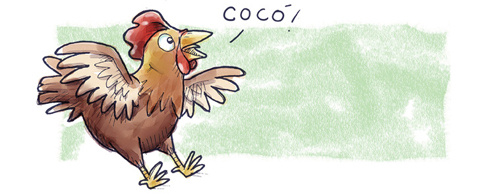

Voltar
Próximo
Menu inicial
Ilustração de um dinossauro ver com cara de amigo soltando um "ROAR!"
— Thomas soa como
um dinossauro – diziam.

Desenho de uma galinha saltando e produzindo um som "CÓ CÓ!"
— Ele soa como uma galinha –
— falavam as crianças.
 Ilustração de um dinossauro ver com cara de amigo soltando um "ROAR!"
Ilustração de um dinossauro ver com cara de amigo soltando um "ROAR!"